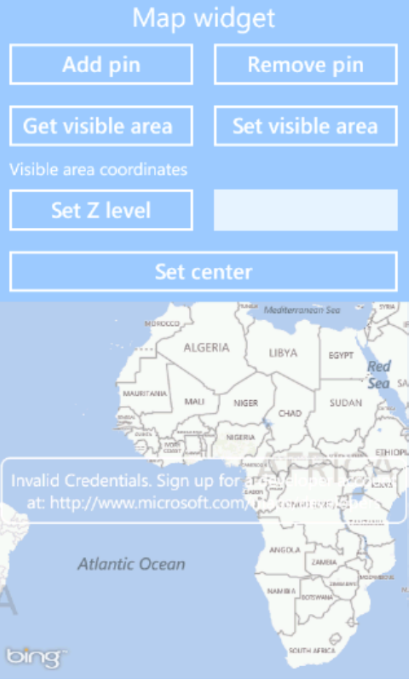
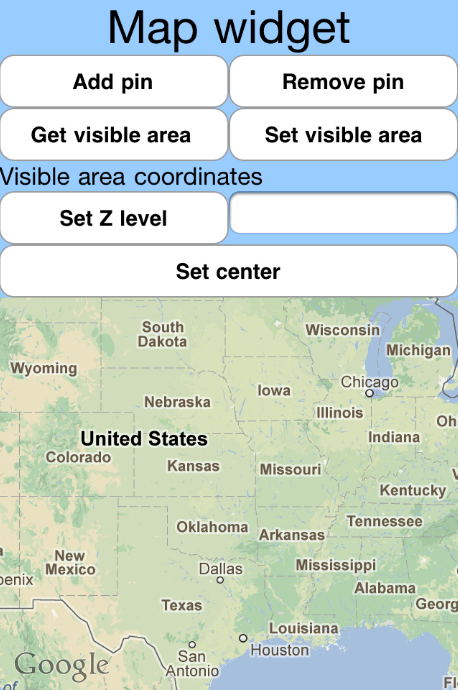

The NativeUIMap example app is a C/C++ application that demonstrates the basic functionality of the MoSync NativeUI's map widget.
|  |  |
| NativeUIMap on Windows Phone 7 | NativeUIMap on iOS |
This example is included in the MoSync SDK installation in the /examples folder. For information on importing the examples into your workspace, see Importing the Examples.
This application should run on all platforms supported by the MoSync NativeUI C++ Library, although some features may not be supported on all platforms (see Feature/Platform Support).
Follow this tutorial to learn more about the NativeUI map widget.
The example app highlights the following capabiliites of the widget:
The app contains only one screen:
The application is split between the following files:
The NativeUIMap demonstrates the following functionality:
// create the main map and add it to the main layout
mMap = new Map("google mock credentials", "bing mock credentials");
mMap->fillSpaceHorizontally();
mMap->fillSpaceVertically();
mMainLayout->addChild(mMap);
// set the map type to satellite (by default it's set to MAP_TYPE_ROAD) mMap->setMapType(MAP_TYPE_ROAD);
// set the map initial zoom level
mMap->setZoomLevel(3);
MapRegion region;
mMap->getVisibleArea(region);
// the label containing information about the visible area
mVisibleAreaCoordinatesLabel->setText("UL la: " +
MAUtil::doubleToString(region.getUpperLeftCorner().getLatitude()) +
" UL lo: " +
MAUtil::doubleToString(region.getUpperLeftCorner().getLongitude()) +
" LR la: " +
MAUtil::doubleToString(region.getLowerRightCorner().getLatitude()) +
" LR lo: " +
MAUtil::doubleToString(region.getLowerRightCorner().getLongitude()));
mMap->setVisibleArea(32.1234, 22.123124, 11.231123, 12.32344);
// we add twenty pins with random coordinates
for (int i = 0; i < 20; i++)
{
// generate random values for the coordinates
// get a random latitude and longitude
double latitude = (double)(rand() % 80);
double longitude = (double)(rand() & 170);
int longSign = rand()%2;
if (longSign == 0)
longitude *= (-1);
int latSign = rand()%2;
if (latSign == 0)
latitude *= (-1);
MapPin *newPin = new MapPin(Location(latitude, longitude));
newPin->setText("test title");
mMapPins.add(newPin);
mMap->addMapPin(newPin);
}
// mMapPins is a list containing all the map pins added to the map
for (int i = 0; i < mMapPins.size(); i++)
{
mMap->removeMapPin(mMapPins[i]);
}
/**
* This method is called when the zoom level of the map changes (at a double tap
* on the google maps for example).
* @param map The map object that generated the event.
*/
void MainScreen::mapZoomLevelChanged(Map* map)
{
}
/**
* This method is called when the visible region on the map is changed (on a drag/scroll
* for example).
* @param map The map object that generated the event.
*/
void MainScreen::mapRegionChanged(Map* map)
{
}
/**
* This method is called when the user clicks on a map pin.
* @param mapPin The map pin object that generated the event.
*/
void MainScreen::mapPinClicked(MapPin* mapPin)
{
}